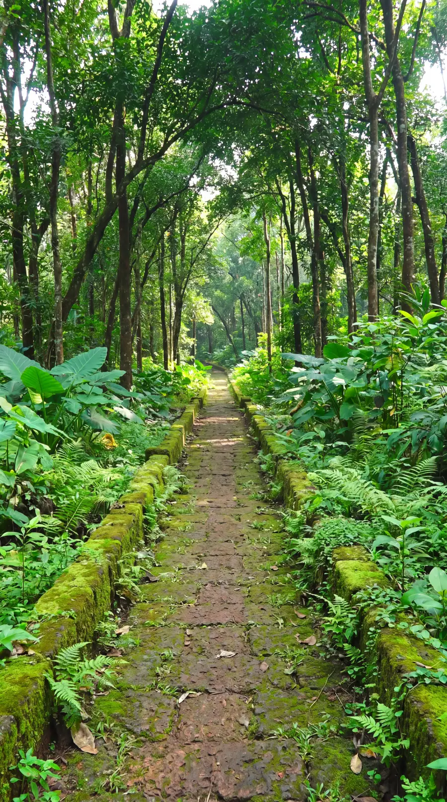
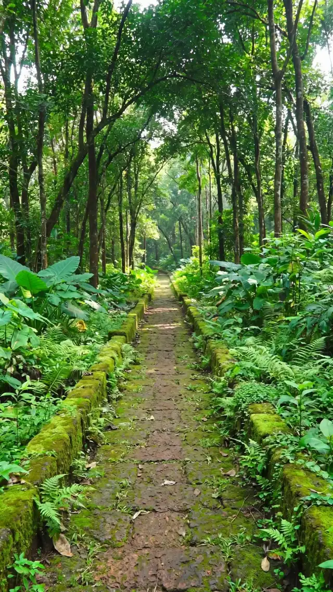
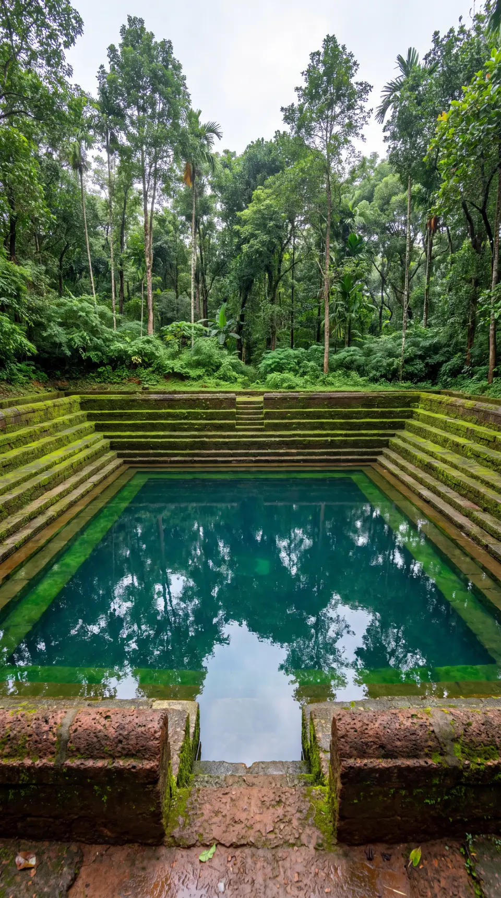
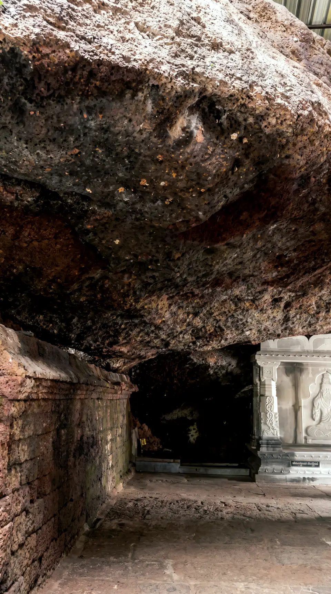
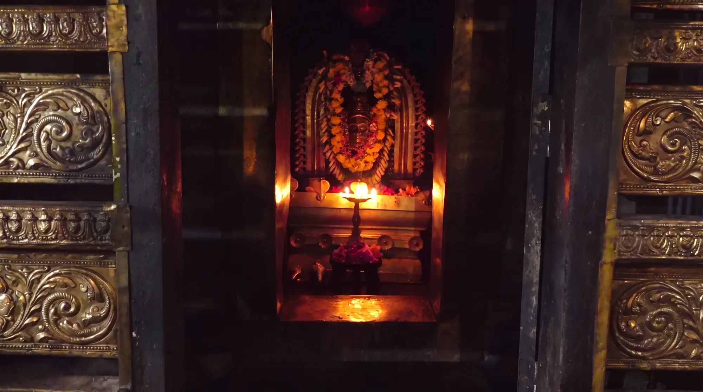
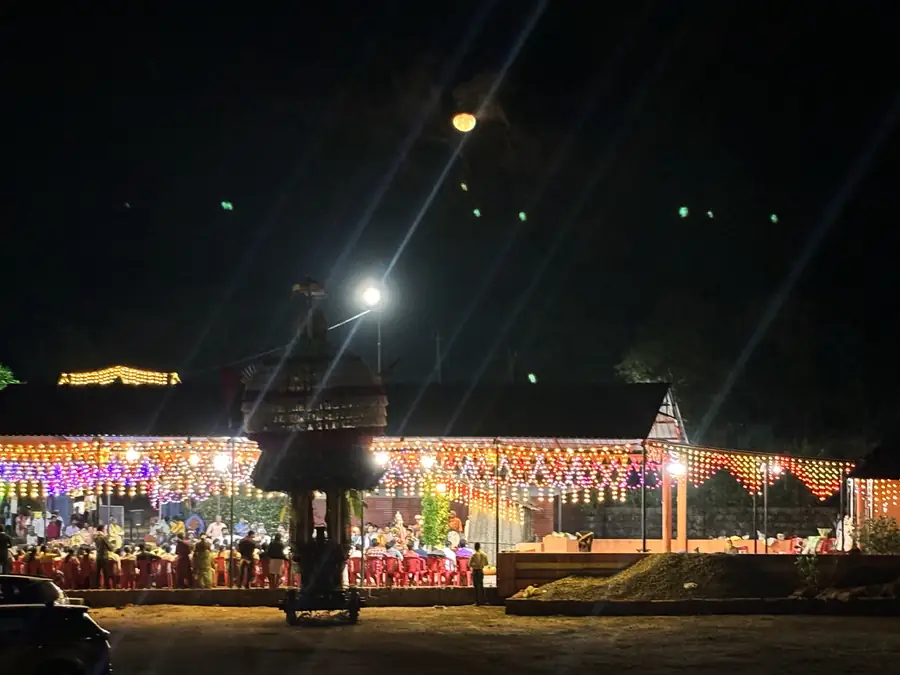
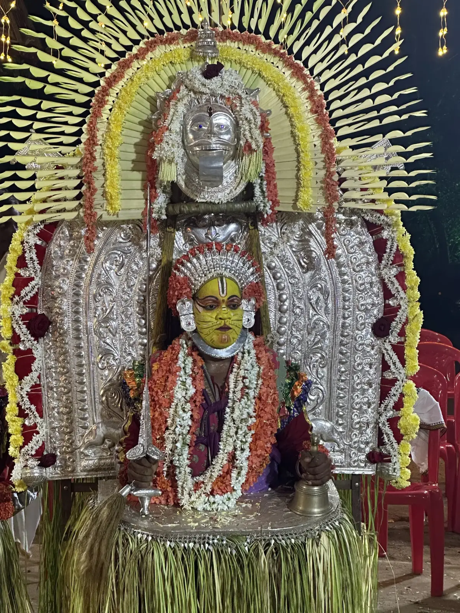
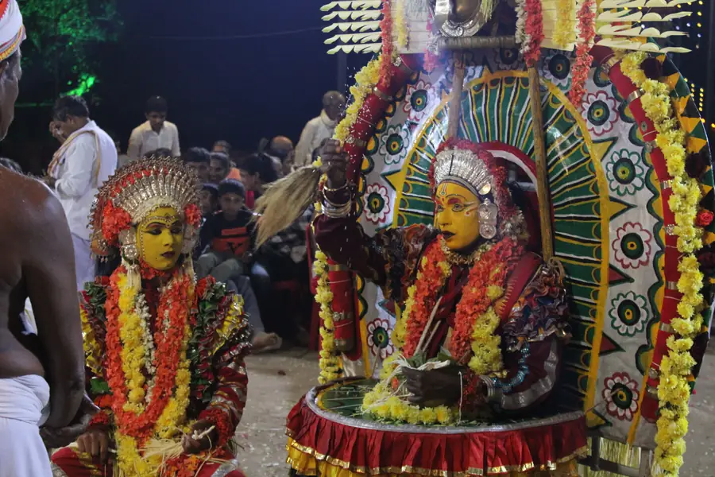

ABOUT THE TEMPLE
The main deity is Sri Somanatheshwara (Shiva).
The temple also has Mahaganapati and Jabali Maharshi as deities. The first record mentioning Nellitheertha dates back to 1487 AD.
The templeHistory
ಶ್ರೀ ಕ್ಷೇತ್ರ ನೆಲ್ಲಿತೀರ್ಥ
Sri Somanatheshwara Cave Temple
20 TO 30 DECEMBER 2026
days
to the Brahmakalashabhisheka
, in Kumbha Lagna
The programme begins on Sunday 20 December.
THE CAVE IS OPEN
It opens on Tula Sankramana. It is said that the remaining months are meant for the gods and rishis.
How to reachTailabhyanjana to Sri Devaru
Brahmakalashabhisheka in Kumbha Lagna, followed by Nyasa Pooje, Mahapooje and Maha Annasantarpane
Yakshagana Hasya Vaibhava: Baravuda Bile
Bali Horatu Utsava, Kattepooje, Pejathaya Mantapa inauguration and Mahapooje
Ganamrutha Nellitheertha, devotional and folk songs
Halittu Seve at the Nagabana of Nagappa Kere
Nagabrahma Mandala Seve, then prasada
Special assistance for Annadana of this day: Sri Ananda Kava and brothers, Santrabailu
ABOUT THE TEMPLE
The temple also has Mahaganapati and Jabali Maharshi as deities. The first record mentioning Nellitheertha dates back to 1487 AD.
The templeHistory
01 · NAGAVANA
Nellitheertha is about 8 km from Kateel.
The birth of Nellitheertha
02 · NAGAPPA KERE
A small natural pond to the north of the temple. Its water is at its best just after the monsoon, from October to December.
Around the temple
03 · THE CAVE
Within a few feet the trail narrows. You bend and crawl, then crawl flat on your stomach.
After about 300 to 400 metres the cave widens again, and there is a lake inside.
The cave04 · ANTAR GANGA
Ganga, appearing from underground.
In the temple’s story, Ganga told Sage Jabali that South India could not handle the severity of her flow. She promised to appear here as Antar Ganga.
Drops of water in the shape of nelli (amla) fall from the roof of the cave, and the lake is made up of these drops. Hence the name: Nelli Theertha.
The birth of Nellitheertha


06 · THE BHOOTAS
Bhootas are the ganas of Shiva; they administer the temple and the village. The main bhootas of Nellitheertha are Pili-Chamundi, Kshetrapala, Raktheshwari and Doomavathy. The kola is held the day after the jaatre, from evening until dawn. The grandest is Pili-Chamundi’s.
The annual jaatre


Photographs from the kola at Nellitheertha, December 2023.
PLAN YOUR VISIT
Sri Somanatheshwara Guhalaya, Neerude Post, Kompadavu Village, Mangaluru Taluk, D.K. District, Karnataka 574144
How to reach: four routesOctober to AprilThe cave is open to people during these months.
Bathe firstUse Nagappa Kere before entering the cave.
Open to allAnyone over five, of any caste, faith or gender, may enter.
A narrow passageExpect to bend and crawl on your stomach.
CONTRIBUTE
Donations for the Brahmakalasha can be deposited into this bank account, or paid by UPI.
The UPI QR code The completed renovation (2024 appeal)Sri Somanatheshwara Temple Jirnoddhara Samiti
Karnataka Bank, Aikala Branch
Current account 0122500100786201
IFSC KARB0000012
UPI 9986376974@kbl
ABOUT NELLITHEERTHA